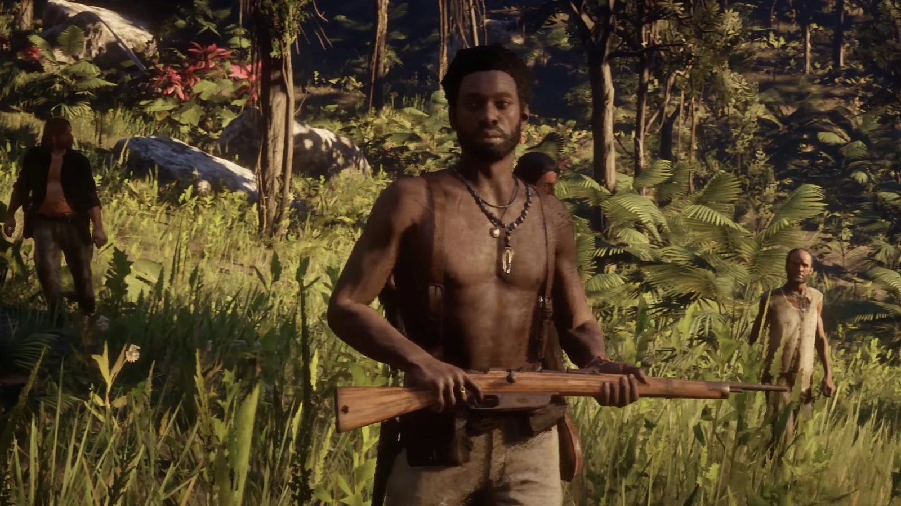
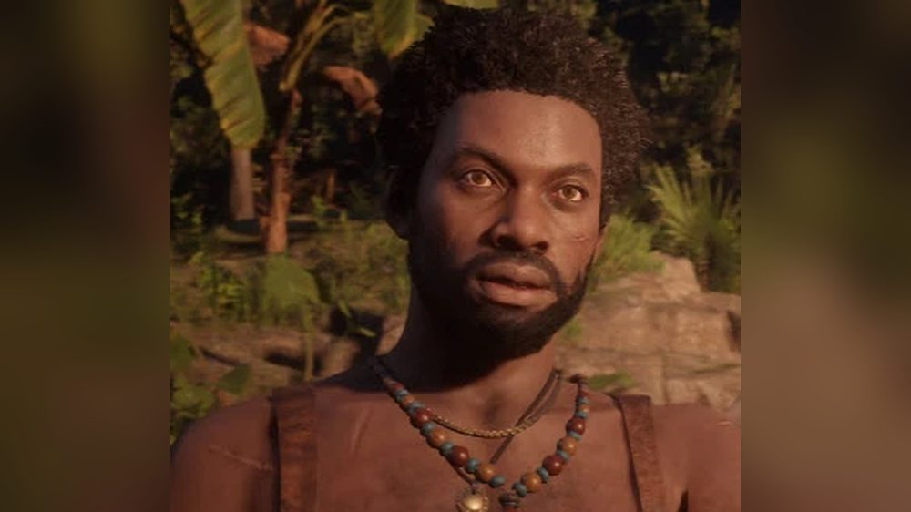
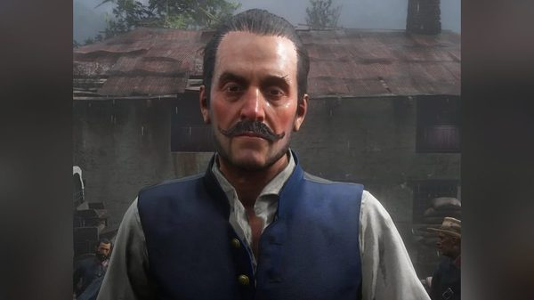
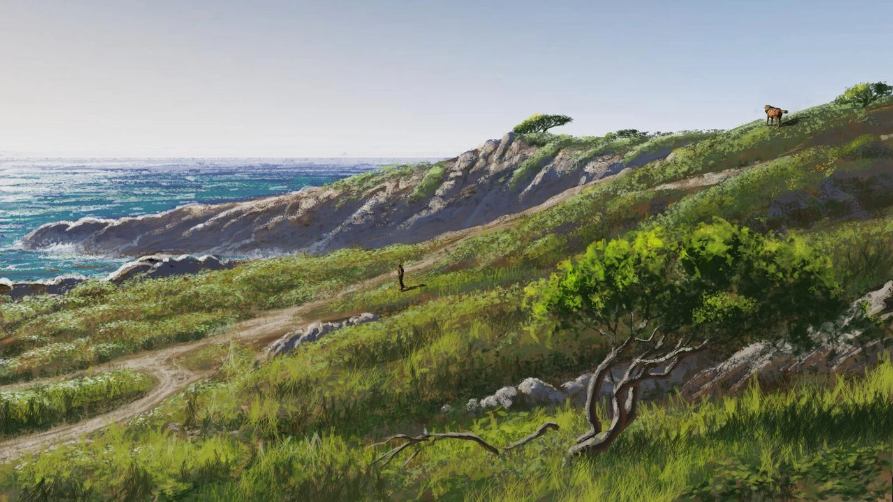

Character · Guarma
Hercule Fontaine
Hercule Fontaine is a Haitian rebel leader on the island of Guarma in Red Dead Redemption 2. He fights the regime of Alberto Fussar and also works as a smuggler.
In chapter 5, he offers the shipwrecked Van der Linde gang a way off the island in exchange for its help.
- Affiliation
- Guarma rebels
- Role
- Rebel leader, smuggler
- Base
- Cinco Torres
- Origin
- Haitian
- Games
- Red Dead Redemption 2
Biography
Welcome to the New World
In "Welcome to the New World", Hercule's men ambush the convoy carrying the chained gang and captured rebels. Arthur grabs a guard's gun and the prisoners free themselves. Javier is shot in the leg and recaptured. Arthur, Dutch, Bill and Micah escape with Hercule.
Hercule leads them to an old building stocked with rifles, where they hold off the soldiers. With the rebel Leon Fuentes, he explains how Fussar runs the island through slave labour on the sugar plantations.
The deal
Hercule promises to get the gang off the island if it first helps free workers captured by Fussar's men. Dutch accepts. The rebels' base is the old Spanish fort of Cinco Torres.
The fight against Fussar
In "Hell Hath No Fury", the gang argues with Hercule over the boat he promised. He tells them Fussar has asked Cuba for help and that a warship is on its way, so they cannot leave safely until Fussar is dealt with. The ship and troops attack Cinco Torres. Hercule loads the fort's cannon, and Arthur fires it and sinks the warship.
In "Paradise Mercifully Departed", Hercule, Arthur, Dutch and Micah destroy Fussar's gun batteries. At Aguasdulces, Hercule points out Fussar on a tower above the port, and a second cannon nearby. Arthur uses it to kill Fussar.
Relationships

Alberto Fussar
The governor whose regime he fights.

Dutch van der Linde
Agrees to his deal: help against Fussar in exchange for a boat.

Arthur Morgan
Fights alongside him at Cinco Torres and Aguasdulces.

Micah Bell
Joins the raid on Fussar's gun batteries.

Javier Escuella
Recaptured during the escape, he spends most of the chapter as a prisoner.
Fate
Once Fussar is dead, Hercule tells Dutch that he and his men will be gone before anyone arrives. The gang sails back to the mainland. The game does not show what becomes of Hercule afterwards.
Behind the scenes
Hercule Fontaine is voiced by Guyviaud Joseph. He appears only in Red Dead Redemption 2.
Gallery
